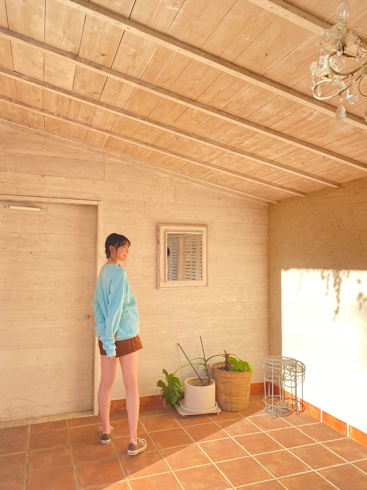

2020/1216Wed光 松尾美佑
寒いですね
でも太陽が元気で良いですね╭│ᵕ̈│╯
千葉県出身
高校2年生
16歳の
松尾美佑です
まつおみゆです
╭│ᵕ̈│╯╭│ᵕ̈│╯╭│ᵕ̈│╯
皆さんクリスマスツリー飾りました？
松尾家では、まみーこと母が1人で飾ってくれていました☀︎
今年ももうすぐ終わっちゃうなんて
信じられないですほんと
はやいはやい
┏|∵|┛
現在発売中のヤングマガジンさんに
新4期生5人が掲載させて頂いています！
オフショットです¨̮


すっごく太陽が綺麗な日でした〜ˊᵕˋ
私は水色でした♪
是非見てみて下さい!!
そして、
レコメン！さん、ありがとうございました！
のりさん本当に優しいお方で、レイちゃんと柚菜ちゃんとも楽しくお話出来て幸せな時間でした！
収録が終わったあとに木の椅子にサインをさせて頂いたのですが、
これまで出演された方々のお名前があって、そこに自分もサインをさせて頂けて本当に嬉しかったです！
ありがとうございました！
⸜（⍥）⸝♡
最近特に理由は無いんですが
やたらノートを買ってしまいます。
鍵がついているのがお気に入りです。
書くことはないんですけど、本みたいなノートが大好きで集めちゃいます。
何書いたらいいですかね
やっぱり夢とか書いたら素敵なんでしょうか
あとペンもやたらと集めちゃうんです
色付きの。
蛍光ペンの形をしてる、でも蛍光してない色
グレーがお気に入りです( ఠ͜ఠ )
小学生の時はやたらと付箋を集めていました
使わないのにね
今は使いますけど。
将来のために集めてたと思えばいいですかね
あ！！！！
携帯、新しくなりました！
自由に文字が打ち放題です！！
これで安心です
絶対画面割らないぞ。
強い気持ちでこの子と生きていきます。
前回のブログの1枚目の写真、
見えていなかったみたいで。
今度こそ！！

見えますかね( ㆀ)？
好きな写真〜⸜❤︎⸝
お返事もまた今度ゆっくり出来たらいいなと思ってます(*ˊᵕˋ*)
明日は〜
なお〜〜〜〜〜〜〜〜〜
可愛いトナカイのカチューシャを見つけてね、
すっっごい可愛いの。
ho-ho-ho-
手づくりクッキーと共にココアを置いておいてくれたら幸せを届けるよ
みゆサンタより
私は毎年サンタさんを追跡してます
楽しいので皆さんもやってみて下さい
去年は妖精語を習いました。
もう忘れちゃいました。
また勉強しなおします。

幸せだ〜の顔( ᵕᴗᵕ )
それでは！また5日後！
もう雪が降ってる地域もあるとか！
あったかくして下さい( ´͈ ᵕ `͈ )
ミュウでした¨̮
ばいっっっっっっ( Ꙭ )/''
コメント(212)
すごくかっこよくてそしてキュートで綺麗で、惚れました！
これからのブログ楽しみにしてるでござる！
おやすみなさい！
今週、急に寒くなった気がするね。
寒すぎるから急いでこたつを出しました。
あったかくて入ってると寝ちゃいそうになります(笑)
クリスマスツリーは昔家族みんなで飾り付けしてたなぁ✨
そのツリーに欲しいもの書いて吊るしてたなぁ。
ヤングマガジン見たよ。
本屋に行ったら無くて何件か探してやっと見つけたよ。
携帯新しくなってよかったね。
文字打ち放題最高だね。
壊れたときにありがたみがわかるよね～。
寒くなってきたと思うけど風邪引かないように気をつけてね。
ミュウちゃん足､長っ！
天井､低っっっ！！！！！！
なさりたい事や１日の一言日記などはいかがでしょうか？
みゆちゃんスタイル良すぎ！！！
オフショットもたくさんありがとう！！！
みゆちゃん大好き♡みにいより
ショールームの喋り方がすごく可愛くて推し増ししてファンになりました。
健康的でのびのびした手足が印象的で、良い写真だね。
ショールームではしっかり喋れてて、緊張しないしっかり者！って印象だけど、ショールーム好き！？
またどんどん発信してね〜待ってるよ。
こんばんは♬寒いね。
ウチのツリーは母がパッチワークで縫った
手縫いのぬいぐるみみたいなやつ。
出してきさえすればそれで出来上がり。
キラキラ、チラチラするものも
ちょっとは欲しいから
お店に探しに行きます。
みんなが糸を手繰ってる写真が好きだよ
みんなかわいいし
可能性の塊だと信じてるので。
では、暖かくして。
おやすみ
松戸、柏に10年住んだよ
浪速の商人（あきんど）
携帯新しくなって良かったね！！
オフショットまじで可愛すぎなのよ、そしてスタイル良すぎ。
また五日後楽しみにしてるね！！
今年は大変な一年だったけど、もう終わっちゃうね…
レコメン聞いたよ！レイちゃんとゆなちゃんと仲良く喋っててすごく面白かったよ！！
もう携帯割るのはダメだよ…笑笑
寒いけど体には気をつけて！また会える機会あればよろしく！
僕は特に展覧会とか行くと、思い出についつい買ってしまう！
ミュウちゃんとおそろいのノートにしたい
ミュウちゃん、サンタさんを追跡するんだね
楽しそう！
昨日、愛知県ではスキッツ3回目があったよ。
タンポポの白鳥さんが修学旅行で東くんに告白するのを、応援していたね
ミュウちゃんのキラキラした笑顔最高だったよ
ミュウちゃん可愛くて明るくて天使みたい
体調に気を付けて過ごしてね。
12月だけど年末な気持ちになっていません。
今年は特に早く感じるせいか、実感がありません。
来月は来年なんですよね。
丑年ですよ。
もー。
もう携帯割るなよw！
ばいっっっっっ！
ブログ更新ありがとうございます。
「ヤングマガジン」見ましたよ。
「レコメン」４期生メガ盛祭り、おつかれさまでした。３人の持ち味もよ～く出ていたし、４期生ライブのことも思い出せたし、楽しい放送ありがとうございました。
新携帯電話、おめでとうございます。これで安心していろんなことが、しかもスピーディーに載せられますね。またたくさんの写真お願いしますね。
それにしても最後の写真、まさに「幸せだ～の顔」、ホントその通りですね。「幸せ感」たっぷり伝わってきます。ミュウちゃんの笑顔大好き、ミュウちゃんの「幸せ」そうな顔を見ていると、私たちも「幸せ」になってきます。
「幸せ」のおすそ分け、「幸せ」配達人、乃木坂の先輩方が大切にしてきた思いですね。というわけで、これからも私たちに「幸せ」をお届けください。よろしくお願いします。
コメントするのは2回目です☺︎
私は1年の中で一番好きな行事がクリスマスなんだけど家族がツリーとか飾るのめんどくさい〜っていう感じだから私が1人でお家を飾り付けしてるの！(笑)
せっかくのクリスマスシーズンだし満喫したくて☺︎
雑貨屋さんとか行くと沢山ツリーとかオーナメントとか売ってて思わず見ちゃうもん！
レコメン聴いたよ！お疲れ様☺︎
のりさん面白い方だよね(笑)
なんかノート集めちゃうとかわかる気がする！私も特に使わないのにペン集めて筆箱がペンで溢れかえってた時あった！(笑)
私の地域雪降ってるよ〜〜！！！
暖かくして寝るね！美佑ちゃんも暖かくして寝てね！
今日も1日お疲れ様！！！☺︎
美佑ちゃん大好き〜❤︎
くるみん
本当に寒くなったねぇ…
体調崩さないようにしないとね…
気を付けましょ！！
素敵なオフショットだねー！
そしてミュウちゃんやっぱりスタイル良すぎ…
いやぁそんな長い足が羨ましい！
くれ！！！(笑)
スマホも新しくなってよかったねー！
壊さないようにね(笑)
それではまたねー！
くまくまでしたっ！
ブログ更新ありがとう。
前回のブログの1枚目の写真載せてくれてありがとう。
本当に4期生のみんな笑顔で良い写真だね！
携帯も新しくなったみたいで良かったね。
次は画面割らないように気を付けて下さい。笑
ヤングマガジン見たよー。
ミュウちゃんの透明感とか爽やかさがすごく出ていて良かったよ！
オフショットもありがとう。
いや～、本当にミュウちゃんスタイル良すぎるよー！
レコメン！はリアタイできなくて昨日聴いたよ。
4期生ライブで披露したThreefold choiceでミュウちゃんがレイちゃんがやってたツリーになりたかったって言った時は笑ってしまった。
確かに見てみたかったかも。笑
とても楽しい時間だったよ～。
ノギザカスキッツも視たよー。
『HIP CATCH PARTY!』の本編ではミュウちゃん大活躍だったねー！
……いや、未公開映像のミュウちゃんのほうがある意味大活躍だったような。笑
まさか4回もミュウちゃんのダンスが見られるなんて。笑
まぁ、やってる本人が一番大変だよね。
ミュウちゃん、お疲れさま。
とても楽しかったよ～！
あっ、僕の家でもクリスマスツリー飾りました。
え～と、サンタさんの追跡方法教えてもらってイイですか？笑
とりあえず風邪引かないように気を付けます。
ミュウちゃんも、体調に気を付けてね。
それじゃ、またねー。
あと、もう年越すのはやいはやいね
┏|∵|┛←これかわいいね 笑
オフショットありがとー 水色似合うねー 美佑ちゃん、脚長いね！やっぱりスタイルがいいって武器になると思うよ！
二枚目の写真の天女、女神感が凄い！透明感があって、美しいよー
レコメンも四期生で出れて良かったね！スマイルガールズ良かったな～ やっぱり美佑ちゃんって声がかわいいね！あと素の声もゆりちゃんににてる気がするー 二人で一緒に自己紹介やって欲しいなー 笑
最後に幸せだーの顔ありがと～ ホントに幸せそうな顔してるね！ 美佑ちゃんが幸せだったらみんなも幸せになってるとおもうよ
ノギスキのしりとり大会面白かったよ～ あの衣装も美佑ちゃん似合ってて良かったよ～ できれば美佑ちゃんのダンス見たかったなー 泣 でもいろんな美佑ちゃんが見れて良かったな！
また五日後だね ブログが楽しみだーーーー
質問させてもらいます。
・クリスマスプレゼントで欲しい物ある？
・今回ミーグリ初めてなんだけど、ミュウちゃんと何話せばいいかな？何か話したいこととかあります？
・ミーグリでリラックスする方法とかあれば教えてください！！
・4期生ライブで一番印象的なこととかある？
猫舌やレコメンで声がかわいすぎてもっと好きになりました！
笑顔が素敵でスラっとしててもっといろんな雑誌でグラビアが見たいです！！！
グレーのペンなんてあるんですね。僕のちいさなこだわりはグリップがぷにぷにのペンをシャーペンを使うことでした。数学や物理だと普通のかたいペンをつかいってました。
こっちは雪が積もって寒いです。みゆちゃんも風邪に気を付けてね！
今日は部活とか塾とかでコメントが遅くなっちゃったから短めにしようと思います笑
私はマイルドライナーのグレーが好き！
みゆりんが好きなグレーはどのペンなんだろう？笑
そして、私も付箋とかメモ帳集める癖あった！
今も使い切れてなくて机の中にいっぱいあるんだよね〜
女子あるあるなのかな笑
いつもはキリトリとか使うけど今日は使わないからなんか変な感じ笑
でもやっぱり最後は質問で終わるね！
【質問】
✽みゆりんの好きなグレーのマーカーペンはどこの？
✽おすすめのノートはありますか？
今日も素敵なブログをありがとう(⑉• •⑉)❤︎
また5日後楽しみにしてるね！
クリスマスツリー飾ったよ。
まみーいいですね。
自分は電気を消してツリーのライトを点けるのが好き！
クリスマスムードに浸れるから。
ヤンマガのオフショットいいね。
素敵なお家でのショット。
ミュウちゃんのスタイルの良さと笑顔が炸裂してる！
水色も白色も似合ってますぜ。
完全にモデルや～
ミュウちゃんノート集めてるんだ。
鍵が付いてるなんて珍しい。
本みたいなノート大好きなんだ。
ノート書かなくても観るだけでもいいじゃないですか。
好きなモノを観てるだけでも幸せな気分になりますよね。
おしゃれなのいっぱいあるからね。
ミュウちゃんコレクション観たいな。良かったら今度見せてね。
ノートに書くこと？
夢もいいね。幸せな出来事や楽しい思い出を書くのもいいんじゃない。
ミュウちゃんペンも集めてるんだ。
グレーが好きなんだ。
小学生の時は付箋を集めてたんだね。
文房具系って集めますよね。
自分は小学生の時、いろんな柄の鉛筆や蛍光ペン集めてた！
中学生の頃はいろんなアニメの下敷き集めてたよ。
長く続いてるのは美術展を観た後、気に入った絵のポストカードを買って集めてる。（今はかなりあるよ）
写真見えてるよ～
４期生ライブの１６人。いい写真や～
ミュウちゃん毎年、サンタさん追跡するんだね。
えっ。え～～～。よくわからんけど最後に凄いのぶっこんでキタ―ｗ
おnewの携帯おめでとうございます。
新品はテンション上がるよね〜〜
意味なく画面を拭いたりして、いつもピカピカの状態にしてね。
でも、保護フィルムやカバーはすぐしとかないとね。
もちろんしてるよね。どんなカバーをしてるのかな？
末永く共に生きていってください。心よりお祈りしております。
じゃ、またね。
12月も半分過ぎましたね。世の中的には、2020年は良くなかった歳になっちゃうのでしょうか？そんな中で、鬼滅の刃の大ヒットは良かった事の一つですね。
ノート集めにペン集め、良い趣味だと思います。私は小学生の頃、一時期切手集めをしていました。数十円～から数百円の安い記念切手をストックブックに二冊分くらい、、10歳から11歳の頃だから、今から45年前のコレクションです。今でも保管しております。手放すつもりは無いですが、今の価値はいくらくらいになるのか、気になります。コレクションって、他の人に価値を認めてもらう事より、自分が気に入った、自分にしかわからない価値が大事だと思います。
ではまた。
オフショありがと！
やっぱみゆちゃんの笑顔がすっごい明るくて好き(*´ω｀*)
顔みてるだけで明日も頑張ろって思える！
今年はうちにみゆサンタが来ることを信じていい子にしてます( ˘༥˘ )ｽﾔ
また5日後！！またねーヾ(｡･∀･｡)
画面を割らないために画面シールとiFaceをオススメします笑
僕は何度か助けられました笑
美佑ちゃんと同じ高校2年生の愛知の覇王です！
さくらちゃんとあやめちゃんと楓さんと同じ愛知県出身だよ！
オフショットありがとう！
どれもめっちゃ可愛いよ！
脚、めっちゃ綺麗だね！
そして、レコメン聞いたよ！
めっちゃ面白くて、最高だったよ！
また、4期生メンバー、出て欲しいです！
これからも応援するので頑張ってください！
ブログ更新ありがとー！
今日も最高の笑顔をありがとー！
みゆちゃんって本当にスタイルがよくて見入ってしまうよ
最近は寒いので体調に気をつけてね
質問
一番思い出に残っているクリスマスプレゼントは何だった？
今日は遅コメです。
ブログ更新ありがとう！
寒い日が続きますね！
ここ山口では、雪が結構チラついていますが、まだ積もるほどではないです。
でも明日の朝はもしかしたら白くなっているかもしれません。
それぐらい寒いです。
風邪をひかないように気をつけねば！
携帯、新しくなって良かったですね！
新しくなった携帯に早速命を吹き込み「この子」と呼ぶミュウちゃん、素敵です。
もうこの子に名前をつけましたか？
落とさないように、大事にしてあげてくださいね！
前回ブログの最初の１枚、見えてないのは自分だけかと思っていたけど、皆んなも同じだったんですね！安心しました。
もう一度アップしてくれてありがとうです！
4期生ライブのいい写真ですね！
あの感動がまた蘇ってきましたよ！
ネットで動画探して、また見てみたくなりました。
それではまたコメントするね。
ミュウちゃんにとって明日がいい日になりますように！ (^.^)/~~~
ちょっと寝落ちしてオールナイトニッポンを慌てて聴き始め、放送終了後にブログを読もうとしたら、目に飛び込んできたミュウちゃんのスタイルの良さに思わず目が覚めた(笑)。
クリスマスツリーもう何十年も飾ってないや。
そもそも今はもうおうちに無いし。。笑
今年も僕にはクリスマスは来なさそう。
相変わらずお仕事です。
でもなんか気分は上がるよね～。
で、上がったままクリスマスが終わっていくの。
毎年そんな感じです。笑
若いうちに楽しんどけよー！笑
ヤンマガさんのオフショット、ミュウちゃんはスポーティーなショートパンツのイメージだね。
クールビューティーってやつ？
違う？笑
多分合ってる。
レコメンで椅子にサインする習慣があるの初めて知った！
超レアな椅子だね！
ミュウちゃんの声も可愛いし本当に楽しい放送でした！
京都でも雪が降りました。
バイクで通勤してたら前身頃に白く積もりましたよ。
寒すぎて手が手袋してても痛かったです。
今年はホワイトクリスマスになるかなぁ？
なんやかんやクリスマス楽しみにしてる自分がいるようです。笑
みゆサンタが来ますように！
今週に入ってからというもの、ぐっと冷え込んでまいりました。その分昼間の陽だまりの暖かさのありがたみが身にしみます。もうすっかり冬ですねえ。
街はクリスマスでにぎやかです。もう来週はクリスマス・イヴですよ。松尾家ではクリスマスツリーの飾りつけも済み、聖なる日を迎える準備万端。あわただしいながらも楽しい聖誕祭を迎えたいものです。
『ヤングマガジン』さんのオフショット。懐かしの白衣装に水色のトレーナー。いずれも美しい。太陽がまぶしいですね。すてきな写真をありがとうございます。
『レコメン！』出演お疲れさまでした。四期生ライブのこぼれ話とか、とても楽しく聴かせていただきました。四期生メガ盛り祭り、ありがたいですね。
すてきなノートは手許にあるだけで気分が高まります。綴られた夢でいっぱいのノートは、きっとたくさんの幸せも運んでくれることでしょう。
こんな年であればこそ、聖なる夜は体健やかに、そして心穏やかに迎えたいものです。暖かくしておすごしください。
ではまたコメント寄せます。今日もいい日でありますように。
さらばだ、また会おう！（気球に乗って去りぬ〜）
写真見れたよ
ノートは何でも好きな事を書けば良いと思うけど、例えば日記みたいにして嬉しかった事を書くとか
『質問』
ミュウちゃんはスキーとかウィンタースポーツは出来ますか？
好きなお節料理は何？
オッハーーー！
今日も寒々だよー
やっぱり冬だねー
ブログありがとぅー！
オフショット可愛いよー
テンション上げて頑張るぞーー！！
水色お洋服コーデミュウミュウキュンキュンとまらんぜ(ó㉨ò)ﾉ♡
ノギザカスキッツACT2#6&ノギスキマチソワカン#6視聴いたしました。
照負俱楽部‼皆様のチャイナドレスキュンキュンとまらんぜツンデレ&どらのテクニックすぎょい‼▼o◎ｪ◎o▼ドレスアップVIPの皆様♡テレテレ藤森様♡第2弾のHIP catch party☆赤色リボン×黒色スカートミュウミュウきゃわわうれぴーぽーo(￣◎￣)o ﾊﾞﾌﾞｩ♡ダンス4回でナイスミュウミュウ(o^∀^)るーまねしああやめん強かったれんさん‼ぷらーばですわおほほほほ(o^∀^)
乃木坂工事中☆B級ニュース2020‼寝れるときに寝ときや同期の癒し系そら豆むきむき牛乳1リットル水風呂節分で集う凶いとこさま双眼鏡餃子チートデーお腹いっぱいトーク感動ぽっぽぽー壁]ω･U ﾆｬ♡
前髪師匠ぱっつん松尾美佑殿だいすこ壁|ω-o)ﾟ+. ﾎﾟｯ ♡
猫舌SHOWROOM♡柴田柚菜様×清宮レイ先生の回視聴いたしました。写真で一言!の大喜利コーナー!サンタクロースミュウミュウご登場‼キュンです壁|▽//)ゝﾃﾚﾃﾚ
ほんじつもたこ焼きせんべいパワー100万馬力でばいころまる( ;-(ｴ)-)ゞｸﾏ
はー、カッコイイなー！
かわいい写真！
ノートにはお仕事に関することも書けばいいんじゃないかな。ダンスの振りとか。
200曲以上あるでー！！
雪中みゆキャンは行かないの？
寒いね寒すぎる
今日も太陽は元気だね
寒さに負けず太陽のように元気に頑張ろー！
ちょっと前からちっちゃいクリスマスツリーが靴箱の上に飾ってあるよ
もう12月も後2週間程
早い
あっという間に過ぎてく
新年を迎える準備しなきゃね
オフショットありがとう
ヤングマガジンもちろん見たよ
すごく可愛かった
夢ノートだね
いいね
夢を書く
夢を声に出す
夢を叶えるための第一歩だと思う
写真ありがとう
見える見える
いい写真だね
身体に気をつけて過ごしてね
ではまたね
ばいばい
新しいスマホとてもいいね！
オフショットも自撮りもすごい可愛い(^^)
僕はクリスマスの曲とか街の雰囲気とかとても好き！
ミュウちゃんクリスマス好きですか？笑
初めてコメントします〜〜 ！
聖来ちゃんとみゆちゃん推してます☺︎
ミーグリとったからお話できるの楽しみにしてます ♡
今日もみゆちゃんかわいいよ〜！
美佑さんが幸せそうでよかった。
一安心一安心(つ≧▽≦)つ
ヤングマガジン、僕は買ったよ。ミュウちゃんのグラビア見たよ。ミュウちゃん、めっちゃ綺麗で、めっちゃかわいかったです。
オフショット、ありがとうございます。
僕の家は、もう１０年以上、クリスマスツリーを飾ってないですね。
ミュウちゃん、体調に気をつけてね。
またコメントするね。
いいね！。みゆスマイル！。
みゆ！
ひろき(Yandji)です☺️
最近めちゃ寒いよね、、、
昨日も雪降ってた、、、
大学から帰るとき、雪と人身事故のダブルで友達と辛いなーって話してたわ！
今日は天気良い☺️
晴れてると心も晴れるよなぁ☺️
ヤンマガさん！
服も似合ってるし、笑顔かわいいし素敵やわ☺️
携帯新しくしたんや！
おれも、そろそろ変えようかなって思ってる☺️
あ、あと、ノーパソも欲しいなぁ☺️
最近、欲しいものたくさんあるなぁw
4期生ライブ！
ほんとに最高やったなぁ☺️
はやく、ライブ会場でもみたいわ！！！
今日も一日研究がんばるぞー！
みゆも、身体に気をつけて過ごしてなぁ☺️
次のブログも楽しみにまってるわ！
では、またねー
ひろき(Yandji)より
コメントする

PROFILE
新4期生リレー
202104
| SUN | MON | TUE | WED | THU | FRI | SAT |
|---|---|---|---|---|---|---|
| 1 | 2 | 3 | ||||
| 4 | 5 | 6 | 7 | 8 | 9 | 10 |
| 11 | 12 | 13 | 14 | 15 | 16 | 17 |
| 18 | 19 | 20 | 21 | 22 | 23 | 24 |
| 25 | 26 | 27 | 28 | 29 | 30 | |

ヤンマガ見たよーヾ(≧▽≦)ﾉ
ミュウちゃんはルックスは正統派美少女だしスタイルもめちゃめちゃよくてフォトジェニックなんだよね。。。グラビアとかモデルとかのお仕事がいっぱいくるといいな♪
鍵がついたノートって何か秘密や魔法が封印されてるイメージo(^-^o)(o^-^)o
ミュウちゃんがノートに封じるものは何だろうね♪
新しいケータイおめ(o^-')b
おいらはケータイのカバーが古くなったので新しくしたよ。。。ずっと手帳タイプのカバーだから画面割ったこと一度もないのさ♪
サンタさんの追跡！！！
ひょっとしてNORADのsanta trackerかな？
おいらももう何年もイブの夜はサンタ追跡してるよ(・∀・)人(・∀・)ﾅｶｰﾏ！
毎年22時台に日本にくるんだよね。。。今年も楽しみ♪
急に冷え込んできたのでミュウちゃんも体調に気を付けてね♪
それじゃまたねー＼(*⌒0⌒)b